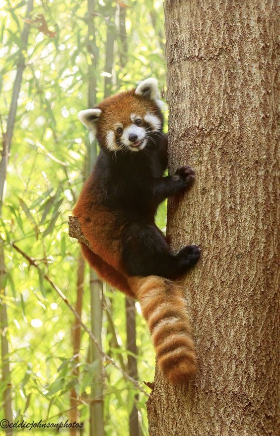

레서판다 너가 궁금해 !
판다의 원조는 레서판다
다들 푸바오(자이언트 판다)가 원조라고 생각하겠지만,
사실을 판다라는 이름은 레서판다가 먼저 사용했어요 !
판다의 뜻은 대나무를 먹는다라는 뜻으로 레서판다를 처음 발견했을 때,
지어진 이름이랍니다.
프로필

| 이름 | 레서판다 |
|---|---|
| 학명 | Ailurus fulgens |
| 크기 | 51~63.5cm |
| 무게 | 3~6kg |
| 수명 | 8~10년 |
| 식성 | 잡식성(대나무, 도토리, 식물의 뿌리, 지의류, 어린 새, 새의 알) |
| 전적 | 설표, 담비 |
| 서식지 | 철쭉, 참나무, 대나무 등이 자라는 가파른 산비탈, 해발 1,400~1,800m의 고지대 |
레서판다 퀴즈
1. 레서판다의 손가락은 6개?
드래그를 하면 정답이 보여요 → 정답은 5개!
레서판다는 나무에 사는 동물로 나무를 쉽게 움켜쥐기 위해, 손목뼈가 발달했어요! 이로 인해 손가락이 6개로 오해를 받는 경우도 있지만 레서판다의 손가락은 5개입니다. 손목뼈가 손가락처럼 보여요.
2. 레서판다의 천적은?
드래그를 하면 정답이 보여요 → 정답은 눈표범!
레서판다는 나무에서 잠을 자고, 둥지를 짓고, 포식자로부터 도망갈 때도 나무 위로 도망가요. 그리고 주위에 짙은 사향 냄새가 나는 분비물로 존재감을 표시하며 자기 영역을 정한답니다.
3. 레서판다가 나오는 애니메이션은?
드래그를 하면 정답이 보여요 → 정답은 메이의 새빨간 비밀
디즈니와 픽사의 애니메이션 영화 [메이의 새빨간 비밀]은 흥분하면 거대한 레서판다로 변하는 13살 소녀 ‘메이’의 이야기에요. 레서판다의 귀여운 외모와 복실한 털을 애니메이션으로 잘 구현했답니다.